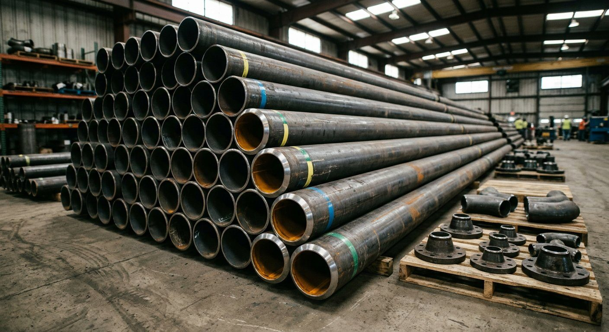
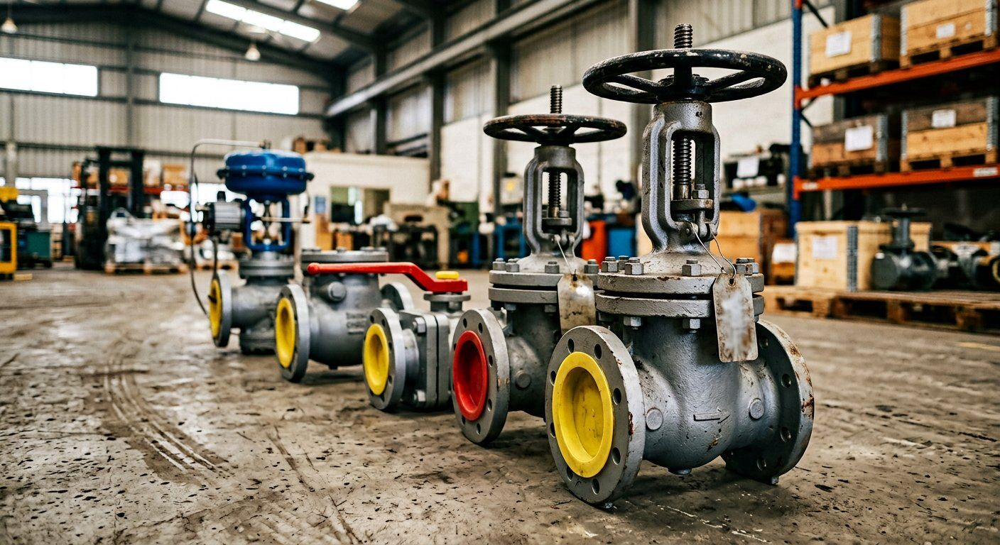
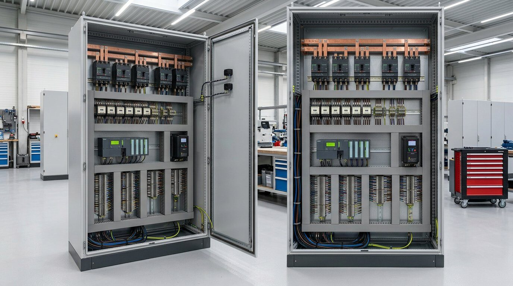
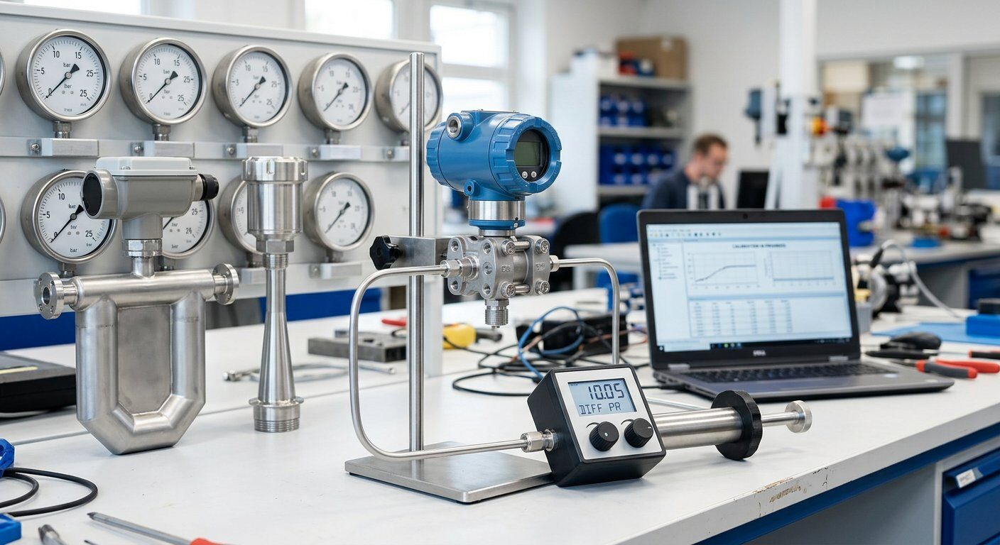
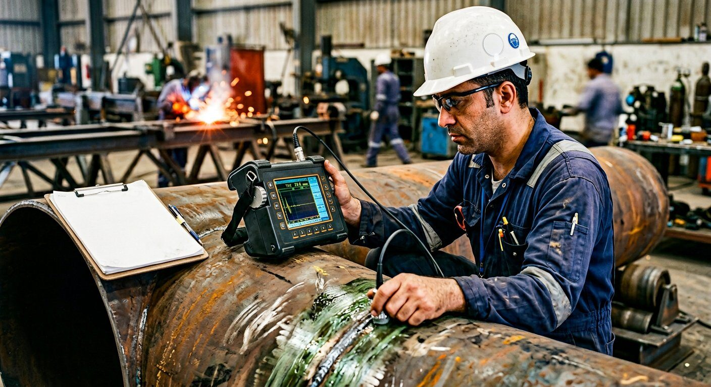
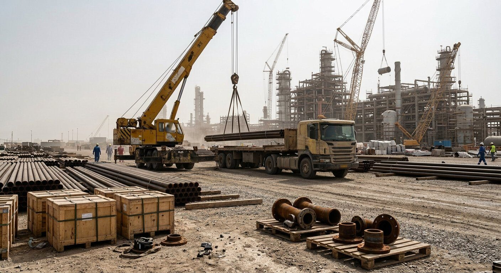

پیشرو تجهیز فرتاک ارائهدهنده خدمات جامع تامین، بازرسی فنی و مدیریت زنجیره تامین برای صنایع نفت، گاز، پتروشیمی، فولاد و نیروگاهی — از استعلام (RFQ) تا تحویل کالا با گواهی MTC و بازرسی TPI

لوله مانیسمان A106, A333, API 5L — فلنج ASME B16.5 — فیتینگ جوشی — گسکت صنعتی
جزئیات خدمات پایپینگ ←
Gate Valve API 600, Ball Valve API 6D, Globe, Check, Butterfly, Control Valve و PSV
جزئیات خدمات شیرآلات ←
تابلو MCC, کلید ACB/MCCB/VCB, PLC Siemens/Allen Bradley, درایو VFD, UPS
جزئیات خدمات برق ←
ترانسمیتر فشار Rosemount 3051, فلومتر, سطحسنج راداری, کنترل ولو, کالیبراسیون
جزئیات خدمات ابزار دقیق ←
بازرسی TPI, تست NDT, گواهی MTC 3.1/3.2, کالیبراسیون, گواهی NACE MR0175
جزئیات خدمات بازرسی ←
مدیریت زنجیره تامین, واردات اروپا/چین, ترخیص گمرکی, حمل و نقل بینالمللی
جزئیات خدمات تامین ←برای تبدیل مطالعه فنی به خرید قابل کنترل، صفحات محصول زیر شامل استانداردها، دادههای RFQ، مدارک کیفی و خطاهای رایج خرید هستند. اگر هنوز دیتاشیت کامل ندارید، از همین صفحات برای آمادهسازی استعلام استفاده کنید.
این صفحات محصول برای آمادهسازی RFQ دقیقتر، کنترل استانداردها و کاهش ریسک خرید پروژهای تهیه شدهاند.